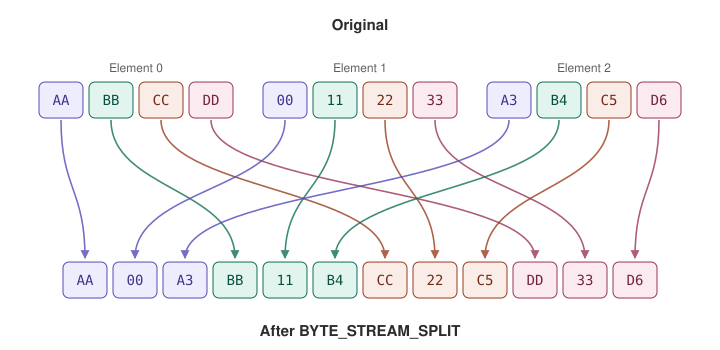
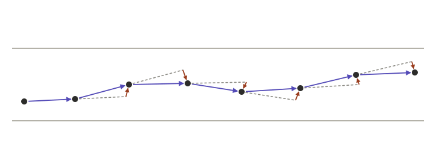
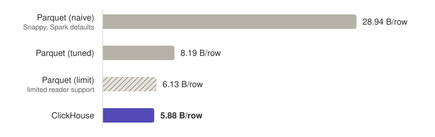

I'm not affiliated with ClickHouse, Inc. We use the free, open-source version.
I have been leading an initiative to migrate our core IoT datasets, consisting of trillions of rows, to a self-hosted ClickHouse cluster on Hetzner bare metal. While ClickHouse is famously fast, we learned that it is also excellent at compressing data, which is highly relevant at our scale. This post explores the tricks we used to noticeably outperform our previous optimized Parquet setup on this front.
The schema we'll be working with represents vehicle GPS pings. A vehicle sends a latitude, longitude ping
at time_sent, while time_received is the time at which it reaches our servers.
Pings from the same vehicle's session send the same (anonymized) session_id.
A row also contains some additional data, like speed and heading.
session_id: stringlatitude: doublelongitude: doubletime_sent: timestamp, second precisiontime_received: timestamp, second precisionspeed: uint8heading: uint16hdop: uint16We ingest over a trillion of such rows per year, or over 50k rows per second. Therefore, it's definitely worth it to try to optimize the storage a bit!
Parquet is a popular columnar file format. Columnar means that data is stored column-by-column, instead of row-by-row. Although this makes the retrieval of a single row slower and more difficult, it comes with clear advantages. The most relevant one for us is that, when paired with a good sort order, it is significantly easier to compress subsequent values of a column than trying to compress mixed data across an entire row.
Since we're not that interested in retrieving single rows, this makes Parquet a solid choice for us. It is also what we were using before we started migrating to ClickHouse. Here's the original Parquet schema:
int64 s2_cell_id INTEGER(64, false); -- PLAIN
binary session_id STRING; -- PLAIN
int32 latitude_e6 INTEGER(32, true); -- DELTA_BINARY_PACKED
int32 longitude_e6 INTEGER(32, true); -- DELTA_BINARY_PACKED
int64 time_sent TIMESTAMP(MILLIS, true); -- DELTA_BINARY_PACKED
int64 time_received TIMESTAMP(MILLIS, true); -- DELTA_BINARY_PACKED
int32 speed INTEGER(8, false); -- PLAIN
int32 heading INTEGER(16, false); -- PLAIN
int32 hdop INTEGER(16, false); -- PLAINThe first type shows the physical type, the second type shows the logical type, and the comment shows the encoding used. We used a couple tricks to get the compressed size as low as possible, so let's take a look.
When using a columnar format, the sort order is very important, as it determines the order in which values are compressed. If subsequent values follow a predictable pattern, they are much easier to compress.
If we were purely interested in compressed size, a simple and good sort order would be
(session_id, time_sent). This groups pings from the same vehicle together, maximizing
the compression ratio. It also makes it easy to retrieve an entire session. However,
if you want to retrieve all pings within a certain area (a geospatial query), you have to do a full scan
over the data, as the relevant pings will be dispersed over the entire file.
At our scale, that would mean these types of queries would be too slow to execute for most use cases.
This was not acceptable for us. Therefore, we introduced a new column: s2_cell_id.
S2 cells divide the earth's surface into rectangular1 cells, such that cells which are close to each other in space tend to have numerically close IDs. Essentially, we're trying to map a 2D space (the earth's surface) onto a 1D line (numeric IDs), while preserving the concept of proximity as best as possible. This is done by using a Hilbert space-filling curve. S2 cells are hierarchical: Lower levels have larger cells, higher levels have smaller cells.
If we calculate the S2 cell at a given level for every GPS point (this is computationally cheap),
and then change our sort order to (s2_cell_id, session_id, time_sent), we can enable fast geospatial
queries over the data, while maintaining good compression. Lower S2 cell levels (larger cells) produce
longer contiguous runs of points for a given session_id, improving compression, but making small-area
geospatial lookups read more superfluous data. On the other hand,
higher S2 cell levels (smaller cells) make it possible to skip data more granularly, making small
geospatial lookups faster, but shorten average runs from the same session_id, worsening compression.
In our custom Parquet writer, we first clustered data into row groups of
~1M rows based on their level 11 S2 cells, and then sorted on (session_id, time_sent)
within each individual row group. This makes it so that each row group "owns" a piece of the surface,
with areas where data density is higher resulting in smaller row groups than areas with lower data density.
Geospatial queries now only have to retrieve row groups whose areas overlap with the queried area.
Here's an example of an hour of data from a provider that mostly sends data from the Netherlands:
In ClickHouse, we went for a simpler solution. We settled on level 8 S2 cells,
and just sorted on (s2_cell_id, session_id, time_sent).
To keep comparisons fair, we'll use this same sort scheme for Parquet in the results
below as well, instead of our custom solution.
Double-precision can store lat/lon pairs to nanometer precision, but of course,
the precision of the incoming data is many orders of magnitude worse,
and we don't care about this level of precision anyway.
Storing lat/lon as doubles leads to noisy bits in the mantissa that are
difficult to compress. Instead, we can multiply latitude and longitude
by 1e6, round it, and store the result in a 32-bit integer.
The maximum longitude is ±180°, so multiplying that by 1e6 gives 180 million,
which comfortably fits inside an int32 (which has limits of roughly ±2.1 billion).
As the maximum latitude is ±90°, both lat and lon are always guaranteed to fit in an int32.
With this representation, we halve the uncompressed size of our data, and we drop down to centimeter precision (max error of ~6 cm for one lat/lon point). This is still more than good enough for what we need to do. By lowering the precision, we get rid of a lot of noise, and the resulting data compresses much better.
It is well known that Parquet lets you compress column data using compression codecs
like Snappy or ZSTD. You might also know that you can use dictionary encoding (RLE_DICTIONARY)
to achieve high compression ratios on low-cardinality columns. What is less known, and less utilized,
however, is that the Parquet standard supports more
encodings
than just PLAIN or RLE_DICTIONARY. Support for these other encodings
is mixed in practice. Although most readers can read columns written with these encodings,
many are unable to write them.
However, DELTA_BINARY_PACKED turned out to be quite beneficial for some of our
columns, so we found a writer that did support it. The encoding works by calculating the
delta between subsequent values in the column, and then applying a binary packing strategy that
is most effective when deltas are small. The result can then be fed into a general purpose
compression codec. We use ZSTD, as it provides a great balance between compression ratio
and (de)compression speed.
After applying all the tricks above, we end up at around 8.2 bytes per row compressed.
Note that a naive implementation where we limit ourselves to Snappy compression and the
PLAIN and RLE_DICTIONARY encodings (the default Spark settings)
gets around 28.9 bytes per row. And if you mess up the sort order and sort on
time_received instead, you end up at around 59.4 bytes per row.
Therefore, I think it's fair to say that we've pushed Parquet reasonably hard.
But if we're willing to sacrifice compatibility and quality of life,
we can push Parquet even further. First off, we've been storing time_sent
and time_received in millisecond precision timestamps, despite them only
having second precision. Why? Because Parquet simply does not support second precision timestamps.
So let's make two changes: We'll manually encode and store time_sent as an int32,
and we'll drop time_received, instead storing received_latency,
where time_received = time_sent + received_latency. It'll be the responsibility
of the reader to reconstruct this column.
Secondly, the Parquet standard was recently updated to allow using the BYTE_STREAM_SPLIT
encoding for integer types, while it was only supported for floating point types before.
This encoding works by rearranging the bytes of the values as shown below:

By itself, it does not reduce the data size, but when paired with ZSTD, the results significantly
outperform DELTA_BINARY_PACKED on our biggest columns.
Why does DELTA_BINARY_PACKED perform poorly by comparison?
I'm not 100% sure, but I think the bit packing can straddle different values over byte boundaries,
messing with ZSTD, which looks for repeating patterns at the byte level.
Unfortunately, reading integer columns encoded with BYTE_STREAM_SPLIT is a new and
relatively unsupported
feature. Major readers like DuckDB and Polars will simply throw an error when encountering this.
With these changes, Parquet hits about 6.1 bytes per row. But realistically, the limitations with this approach are probably a dealbreaker in most cases. Can ClickHouse still do better than this? Yes!
ClickHouse is an OLAP database. ClickHouse, Inc. sells a managed version of ClickHouse called ClickHouse Cloud, but we chose to self-host the open source version of ClickHouse on Hetzner bare-metal instead. ClickHouse's main table engine, the MergeTree, also stores data in a columnar fashion, just like Parquet. Each node in the cluster stores its data directly on its own NVMe SSDs. This makes queries ridiculously fast. However, SSDs are quite a bit more expensive than hard drives (like S3 uses), especially with recent AI-related price hikes. That makes optimizing the compressed size per row even more relevant than before.
Here's the original Parquet schema, ported to ClickHouse:
CREATE TABLE gps
(
s2_cell_id UInt64 CODEC(ZSTD(3)),
session_id String CODEC(ZSTD(3)),
latitude_e6 Int32 CODEC(DoubleDelta),
longitude_e6 Int32 CODEC(DoubleDelta),
time_sent DateTime('UTC') CODEC(DoubleDelta, ZSTD(3)),
received_latency Int32 CODEC(T64, ZSTD(3)),
time_received DateTime('UTC') ALIAS time_sent + received_latency,
speed UInt8 CODEC(Delta, ZSTD(3)),
heading UInt16 CODEC(ZSTD(3)),
hdop UInt16 CODEC(T64, ZSTD(3))
)
ENGINE = MergeTree
ORDER BY (s2_cell_id, session_id, time_sent)Incredibly, this ClickHouse port reaches about 5.9 compressed bytes per row, despite the fact that we're using a much lower ZSTD level (3 for ClickHouse vs 11 for Parquet)2. How is this possible? Let's look at a comparison of the most important columns:
| Column | Parquet (tuned) | Parquet (limit) | ClickHouse | ClickHouse - Parquet (tuned) | ClickHouse - Parquet (limit) |
|---|---|---|---|---|---|
latitude_e6 |
1.931 DBP | 1.588 BSS | 1.477 DD | −0.454 | −0.111 |
longitude_e6 |
1.989 DBP | 1.713 BSS | 1.604 DD | −0.385 | −0.109 |
time_sent |
0.976 DBP | 0.483 BSS | 0.404 DD | −0.572 | −0.079 |
time_received |
0.949 DBP | 0.141 BSS (lag) | 0.223 T64 (lag) | −0.726 | +0.082 |
speed |
0.734 | 0.712 | 0.617 Delta | −0.117 | −0.095 |
| Total | 8.189 | 6.131 | 5.879 | −2.310 (−28%) | −0.252 (−4%) |
DBP = DELTA_BINARY_PACKED / BSS = BYTE_STREAM_SPLIT / DD = DoubleDelta
It seems like DoubleDelta outperforms both Parquet encodings. How does it work?

Imagine a vehicle is driving along a straight road. Delta stores the difference between
two consecutive points (blue vectors). DoubleDelta stores the difference between
two consecutive deltas (red vectors). Another way to think about it is that DoubleDelta
"predicts" the next point will be at the same delta offset as the previous point's delta,
and then "corrects" itself with a second offset. In this case, it is clear that the red vectors are
smaller than the blue vectors, which can intuitively explain why it compresses better.
Of course, this encoding is most effective when vehicles are driving along a straight road for long periods of time at a constant speed. Luckily, a majority of our data is from highways, so that checks out! Unfortunately, Parquet has no encoding like this3, so this is a clear advantage for ClickHouse.
The ClickHouse schema gets a better byte per row result than the best Parquet schema,
while maintaining good quality of life for data consumers. The DateTime type
is a second precision timestamp, physically stored as a 32-bit integer. This is the exact type we
needed from Parquet, but which it didn't have. So now readers can natively use whichever
timestamp functions they want.
Also, with time_received being stored as an ALIAS, readers can query
it directly, and ClickHouse will transparently compute the values at query time by adding the
time_sent and received_latency columns.
When both Parquet and ClickHouse are tuned for maximum compression, ClickHouse comes out on top, at least for this dataset:

Assuming a dataset size of 5 trillion rows (a bit more than 3 years of data), this would be the cost of storing each of these on S3:
S3 Standard in us-east-1 at $0.023 per GB-month
Assuming we wanted to store the entire dataset on NVMe SSDs, this is how much each solution would cost per month. We assume each row is stored on three replicas, and use current Hetzner prices for the node type we're currently using in our production ClickHouse cluster.
Hetzner EX63 at €802 (≈ $897) per month for 4 × 3.84 TB NVMe with 3× replication
ZSTD(11) drops us down to about 5.75 bytes/row.
↩
DoubleDelta isn't quite the same as just doing Delta
twice, as it also does a bit packing step at the end,
just like DELTA_BINARY_PACKED. And just like with that encoding, this might screw
with ZSTD. On the latitude and longitude columns, appending ZSTD(3)
after DoubleDelta doesn't improve compressed size at all.
On the time_sent column, ZSTD(3) can still noticeably improve
the result from DoubleDelta. But on ZSTD levels 15 and up,
Delta, ZSTD starts outperforming DoubleDelta, ZSTD, potentially
because the bit packing finally starts to hurt? I don't know, this is quite obscure stuff.
In any case, level 15 is too slow to reasonably use in production anyway.
↩